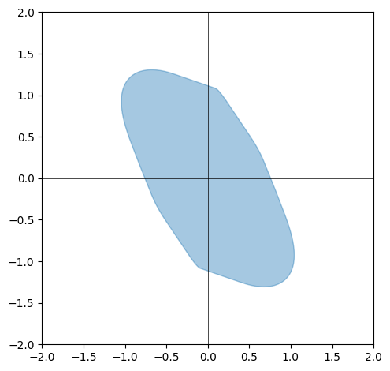
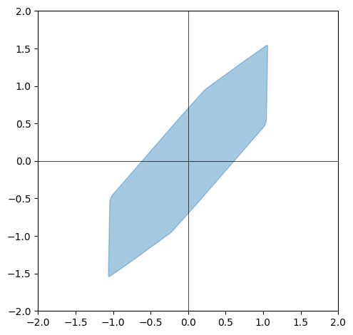
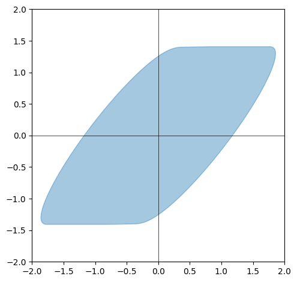
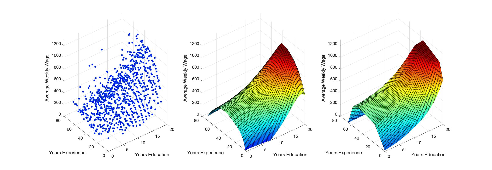

My research develops geometric frameworks for understanding structured convex bodies that arise in optimization and statistics. This includes the study of classical objects like zonotopes and polytopes in high-dimensions and generalizations to operator-theoretic settings.
Operatopes and Operanoids: In joint work with Venkat Chandarsekaran, we introduce operatopes, which are Minkowski sums of affine images of operator norm balls—a natural generalization of zonotopes (Minkowski sums of line segments). Taking limits yields operanoids, defined as expectations of random affine images of operator norm balls. This leads to the study of noncommutative zonoids using free probability theory.
Random Polytopes: In joint work with Gilles Bonnet, we study facets of convex hulls of random vectors sampled uniformly from the unit sphere in high dimensions. We establish asymptotic formulas for the height of facets and expected number of facets as dimension grows, identifying different regimes with distinct asymptotic behavior.



Convex regression—fitting a convex function to input-output data—is fundamental in statistics and machine learning. We introduce spectrahedral regression, which fits spectrahedral functions (maximum eigenvalue of an affine matrix expression) to data.
This significantly generalizes polyhedral (max-affine) regression by allowing the fitted function to capture richer geometric structure. We prove approximation bounds showing how well spectrahedral functions approximate arbitrary convex functions via statistical risk analysis. We also develop an alternating minimization algorithm that converges geometrically with high probability to near-optimal solutions given good initialization.
